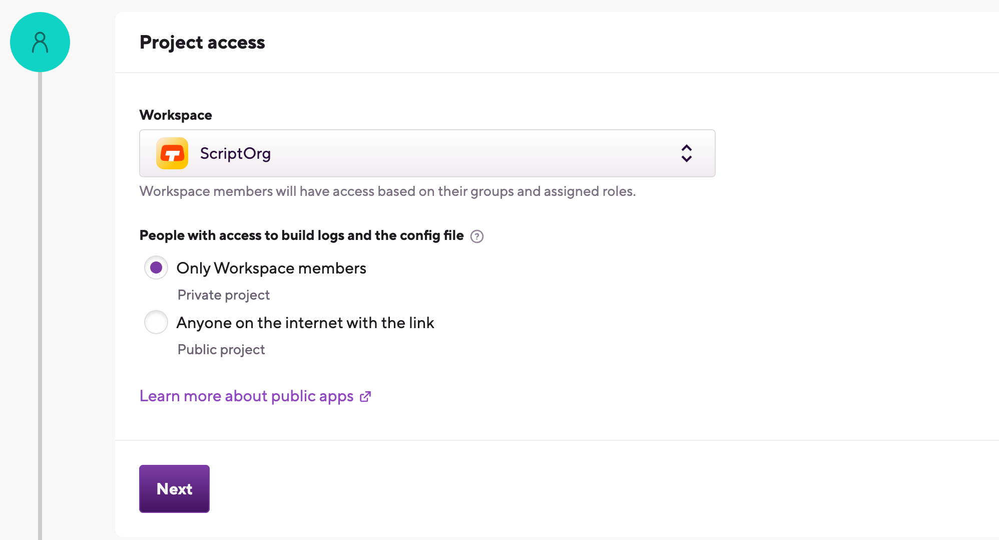
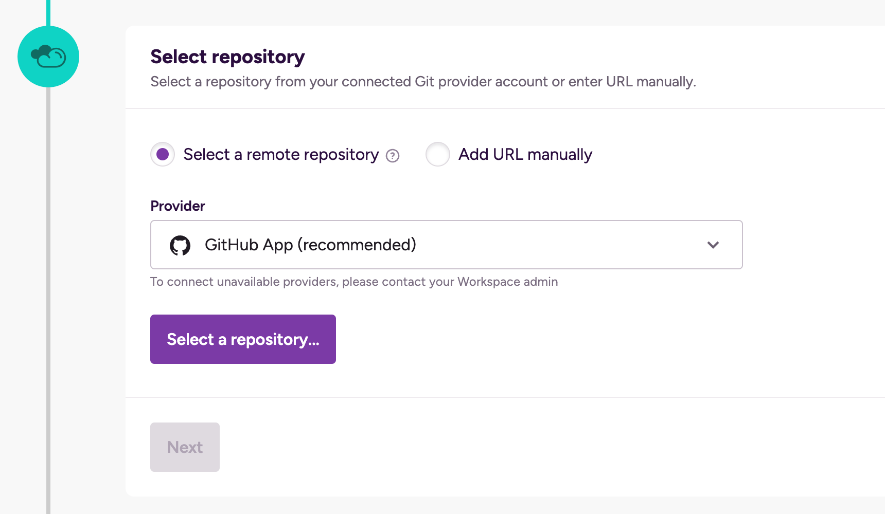
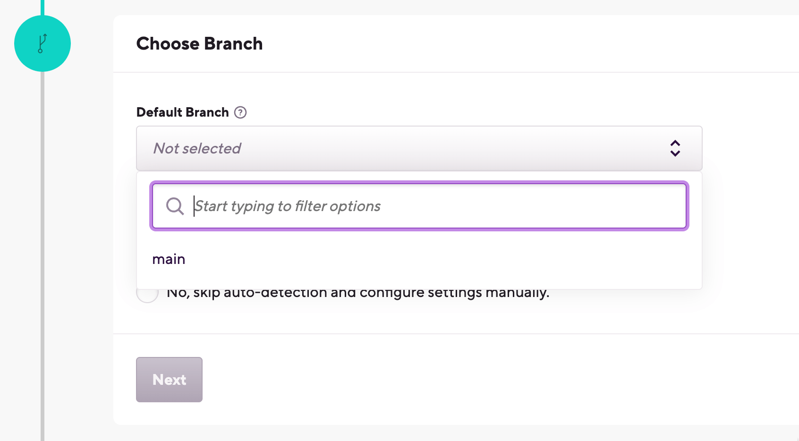

Getting started with React Native projects
Get started on Bitrise by signing up via email or a Git provider, connecting a repository, and running the first build for your React Native app.
Expo projects
If you use Expo in a React Native project, we have a dedicated guide: Getting started with Expo projects.
You can easily set up and configure your React Native project on Bitrise. A React Native repo can consist of an Android and an iOS project so configurations should be done as you would normally do with Android and iOS apps. When running a React Native project on Bitrise, you will see that first an Android, then an iOS build gets built.
Do you have a Bitrise account?
Make sure you have signed up to bitrise.io and can access your Bitrise account. There are multiple ways of registering an account:
Adding a React Native project to Bitrise
This procedure will guide you through the process of adding your React Native project to Bitrise, connecting your repository, setting up your repository access, selecting a branch and validating your project. Below we highlight some React Native-specific configuration as well.
-
Log in to Bitrise and go to the Dashboard.
-
Click the button.
-
Under Project access, select the Workspace that will own the project.
 -
Set the privacy of the project.
Privacy is final
You cannot change this setting later! If you realize you've accidentally added your project as a public project even though you need it to be private, you'll have to delete the project and add it again.
-
Private projects are only accessible to you, your Workspace members and those who are invited to work on a project. They require authentication to access the repository of the project.
-
Public projects expose their
bitrise.ymland their build logs to everyone. If you have a public projects build URL, you can view its build log, to help with troubleshooting, for example. Public projects do not require authentication and they cannot have SSH keys.
-
-
Select one of two options to set your repository URL:
-
With the Select remote repository option, you can select a repository from a list of repos from a connected Git provider account. Choose the Git provider from the dropdown menu, then click Select a repository... and select the repository from the list.
 -
The Enter URL manually option does not require a connected Git provider account: you can simply enter the URL and proceed to the authentication phase. We strongly recommend using an SSH URL, unless you are setting up a public project.
Repository URL
You will be able to change your project's repository URL later. You can also connect or disconnect your account to Git provider services at any time.
If you signed up for Bitrise using a Git provider account, that one is already connected and you can select any of your repositories from it.
-
-
If you use an OAuth connection, you need to add an SSH key in the Authorize Bitrise section.
You don't need SSH keys if:
-
Your project is a public project.
-
You connect to your Git repository via a GitHub project installation.

-
Auto-add a generated SSH key to your repository: We recommend using this option. We automatically generate an SSH key pair and register the public key to your repository. Requires your connected Git provider account to have admin rights to the repository.
-
Copy a generated SSH key to your Git provider manually: We generate an SSH key pair for you and you can copy the public key and register it manually to your Git provider. It is useful if, for example, you need to access multiple repositories with the same SSH key.
-
Add your own SSH key to Bitrise: You can generate your own SSH key and paste the private key here after choosing this option. You also need to add the public key to the repository manually. To generate your SSH key pair: Generating your own SSH keypair.
Configure SSH keys at any time
If you can't set up a valid, working SSH key connection at this time, don't worry: proceed with adding your project. You can set up the SSH connection afterwards: Configuring SSH keys.
-
-
Select the default branch of your repository. This branch should contain the configuration of your project.
-
If you successfully configured SSH access in the previous step or if you're adding a public project, Bitrise will parse your repository and allow you to select a branch from a dropdown menu.
-
If you didn't configure repository access, you need to type the branch name manually.
You can change the default branch of the project later.
 -
-
In the next step, choose Yes, auto-detect configuration. Bitrise will scan your repository and attempt to set up a stack and default Workflows based on the results of the scan. In most cases, we recommend choosing this option.
Project type
Detecting a project type serves to assist in the initial configuration of your project. But don't worry, you can change every setting, including the project type, at any time after you added the project.
-
Wait while Bitrise is validating your project. If your configuration files are available on the selected branch, the scanner will detect your app as a React Native app.
If your project consists of only one module, that module will be automatically selected for Module. If your project contains more than one module, you can pick a module, but we recommend the main one!
-
In the Variant field, select a variant that suits your project. Pick Select All Variants to build all variants. Pick debug or release if you wish to generate an APK or an IPA file.
-
In the Project (or Workspace) field, select your Xcode project or Xcode Workspace path.
-
In the Select Scheme name, pick a scheme name. The scanner validation will fail if you do not have a SHARED scheme in your project. You can still point Bitrise manually to your Xcode scheme but if its shared, we automatically detect it for you.
-
In Select ipa export method, select the export method of your .ipa file: ad-hoc, app-store, development or enterprise method. Don't worry, you can change this later.
-
Register a webhook when prompted so that Bitrise can start a build automatically when code is pushed to your repository, or a pull request is created.
-
Once you are done, click to go to the newly added project's home page. From there, you can start editing your Workflows and run builds.
You have successfully set up your React Native project on bitrise.io!
Installing dependencies for ExpoIonic/CordovaReact Native apps
If the Bitrise project scanner has successfully scanned your React NativeIonic/Cordova project, Run npm command or Run yarn command Steps will be included in your default Workflows. These Steps can install the missing Javascript dependencies for your app.
For native Android dependencies, you can use the Install missing Android SDK components Step.
For native iOS dependencies, you can use, among others, the Brew install Step or the Run CocoaPods install Step.
To install Javascript dependencies with npm:
Using Yarn instead of npm
In this guide, we're using npm to install Javascript dependencies. However, you can use the Run yarn command Step: it can install missing JS dependencies without any additional configuration required.
-
Log in to Bitrise and select Bitrise CI on the left, then select your project.
-
Click the button on the main page.
-
Make sure your Workflow includes the Run npm command Step.
-
In The 'npm' command with arguments to run input variable, type
install.Using the
npm cicommand instead ofnpm installIf you already have an up to date
package-lock.jsonfile in your project, we recommend using thecicommand in The 'npm' command with arguments to run input. Usingnpm cican not only result in much faster build times compared tonpm installbut more reliable builds as well.
Code signing for React Native projects
A React Native project can consist of an Android and an iOS project. Both have different signing procedures. Follow our platform-specific instructions to code sign your mobile app for both iOS and Android.
Signing your Android project
All Android apps must be digitally signed with a certificate before they can be installed on Android devices. On Bitrise, you can use our dedicated Step for this purpose but first you'll need a keystore file.
-
Open your project on Bitrise with a user that has the Admin role on the project.
-
On the main page of the project, click on the Project settings button.
-
On the left, select Code signing from the menu.
-
On the Android tab, click .
-
In the dialog, drag-and-drop the file and fill out the required fields then click
-
Open the Workflow Editor.
-
Add the Android SignGenerate cordova build configuration Step to your Workflow.
If you uploaded your keystore file and filled out the metadata, the required inputs of the Step are already filled and require no more configuration from you.
Prerequisite of the Android Sign Step
Make sure to add the Android Sign Step after a build Step (Android Build Step or Gradle Runner Step) in your Workflow.
Testing your React Native app
You can use React Natives built in testing method, called jest to perform unit tests.
-
Log in to Bitrise and select Bitrise CI on the left, then select your project.
-
Click the button on the main page.
-
Add the run npm command Step to your Workflow.
-
In the npm command with arguments to run input field, type
test.
For more detailed guides on React Native testing, check out Testing React Native apps.
Adding React Native test results to Test reports
Bitrise's Test reports add-on allows you to view and analyze your test results in one convenient place. By default, these tests won't show up in Test reports. However, you can export the results: Exporting to Test Reports from any Step. The basic process is as follows:
-
Generate a
junit.xmlfile during the build.For example, you can use jest-junit to prepare a report.
-
Add the Export test results to the Test reports add-on Step to your Workflow.
-
In the Path where custom test results reside input, add the folder in which your
junit.xmlfile and other test results are located. -
In the Test result search pattern input, set
*.xml. -
In the The name of the test input, set the name of the test run.
The test results will be under this name in the Test Reports add-on.
-
Make sure you have the Deploy to Bitrise.io Step in your Workflow.
Deploying a React Native app
You can deploy your React Native app to:
-
bitrise.io: This allows you download the generated binary, and to share it with others via the public install page.
-
Online stores: we have integrations for multiple different online stores. In these guides, we'll show you how to publish to Google Play and to Apple's App Store.
Deploying a cross-platform app to bitrise.io
The Deploy to bitrise.io Step uploads all the artifacts related to your build into the Artifacts tab on your Builds page.
You can share the generated binary file (APK for Android or an IPA file for iOS) with your team members using the public install page. The public install page is a URL you can share with others who can install the generated app binary on their device. You can also notify user groups or individual users that your APK or IPA file has been built.
Publishing to expo.io
The Deploy to Bitrise.io Step does not use Expo commands and doesnt publish to expo.io. This Step publishes artifacts to Bitrise and is not specific to a particular platform.
If you need to publish to expo.io, set the Run expo publish after eject? input of the Eject Expo Step to yes.
Be aware that in that case you have to provide your username and password for your Expo account to publish to expo.io.
-
Log in to Bitrise and select Bitrise CI on the left, then select your project.
-
Click the button on the main page.
-
Make sure you have the Deploy to bitrise.io Step in your Workflow.
-
In the Notify: User Roles, add the role so that only those get notified who have been granted with this role. Or fill out the Notify: Emails field with email addresses of the users you want to notify.
Make sure you set those email addresses as Secrets! These details can be also modified under Notifications if you click the eye icon next to your generated binary in the Artifacts tab.
-
If you want the Step to generate a public install page for you, set the Enable public page for the App? input to
true.
Deploying the app to App Store Connect
Keep in mind that every time you want to push an app to App Store Connect, it must have a unique build and version number: increment either or both before deploying.
-
Make sure you have a working connection to your Apple Developer account.
-
Generate an IPA file on your own machine at least once.
-
Upload all necessary code signing files to Bitrise.
To deploy an app to App Store Connect, you need a Distribution type certificate and an App Store type provisioning profile.
-
Make sure the Xcode Archive & Export for iOS Step is in your Workflow.
-
Set the Automatic code signing input to the Apple service connection you want to use for code signing. The available options are:
-
offif you dont use automatic code signing, or if you exclusively use Step inputs for Apple service authentication. -
api-keyif you use API key authorization. -
apple-idif you use Apple ID authorization.
-
-
Set the Distribution method input of the Step to
app-store.The Step will store the path of the exported .ipa file in the $BITRISE_IPA_PATH Environment Variable.
-
Add the Deploy to App Store Connect Step to your Workflow.
-
Fill the required inputs.
-
Either the apps Apple ID or its Bundle ID is a required input. One of the two must be provided.
-
If you set the Submit for Review to
true, the Step will wait for your submission to be processed on App Store Connect and then submit the given version of the app for review. -
The default value of the Skip App Version Update input is
No. Change it only if you incremented the app version number in another way. -
If you use an App Store Connect account that is linked to multiple teams, provide either a Team ID or a Team name!
-
-
Start a build.
If all goes well, your app will be submitted to App Store and you can distribute it via Testflight or via the App Store!
Deploying your Android project to Google Play
You can use the Deploy to Google Play Step in your Workflow to upload your digitally signed AAB/APK to the Google Play Store.
-
Add the Cordova archive or the Ionic archive Step to your Workflow.
Note that if youre building for both iOS and Android in one project, and either of your apps fails, the whole Cordova archive/Ionic archive Step will fail.
-
Fill in the required inputs.
-
The Platform input needs to be set to device.
-
The Build command configuration input must match the Build configuration input of the Generate cordova build configuration Step.
The archive Step must come after the Generate cordova build configuration Step in the Workflow.
-
-
Configure code signing for your app.
-
You only need to do this for your very first Google Play deployment of the app.
-
In the Flutter Build Step, find the Android Platform Configs input group and make sure the Additional parameters input has the value
--release. -
In the Android output artifact type input field, select either APK or appbundle depending on your deployment requirements.
-
In the Output (.apk, .aab) pattern input, set the path where the Deploy to Google Play Step will be able to access the generated binary.
The path should be relative to the project source directory, stored in the
BITRISE_SOURCE_DIREnvironment Variable. -
Make sure you have the Deploy to Google Play Step after the Android SignCordova Archive or Ionic Archive Step in your Workflow.
-
Fill out the required input fields as follows:
-
Service Account JSON key file path: This field can accept a remote URL so you have to provide the Env Var which contains your uploaded service account JSON key. For example:
$BITRISEIO_SERVICE_ACCOUNT_JSON_KEY_URL. -
Package name: The package name of your Android app.
-
Track: The track where you want to deploy your APK (for example, alpha/beta/rollout/production or any custom track you set).
-